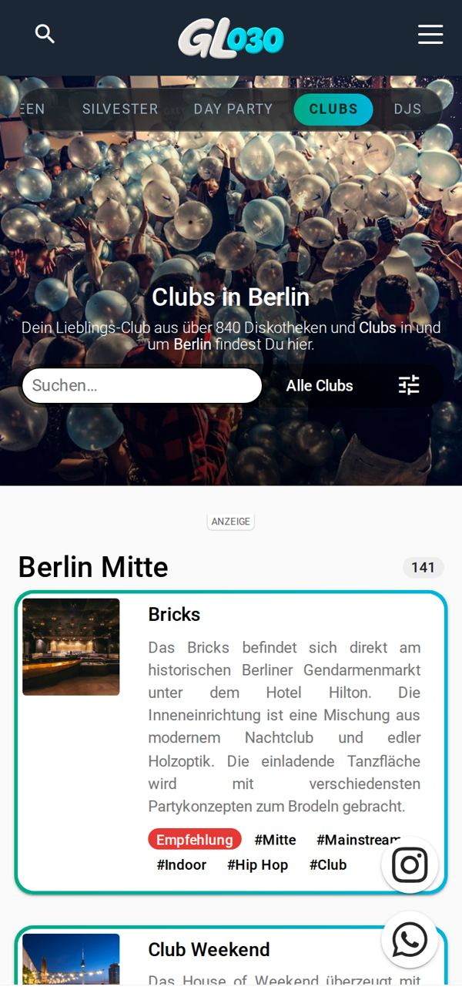
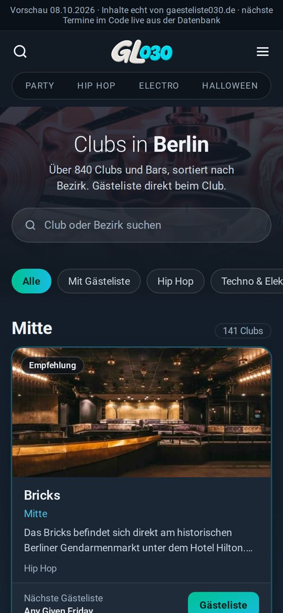
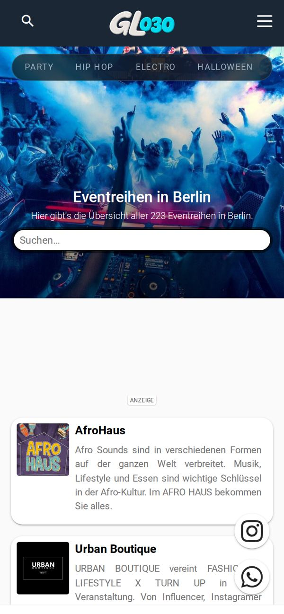
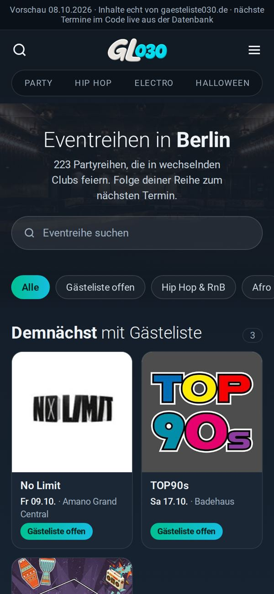

Je ein Vorschlag pro Seite, gebaut im aktuellen Dark-Design des Feeds. Inhalte sind echt von gaesteliste030.de. Die Filterleiste (neue Tagzeile) funktioniert in der Vorschau. Nächste Termine kommen im Code live aus der Datenbank; in der Vorschau stehen nur Termine, die tatsächlich angekündigt sind.
Filterleiste nach Musik und Stil statt Hashtag-Zeile. Bezirk als Abschnittskopf wie die Datumsköpfe im Feed. Empfehlungen groß mit Foto, übrige Clubs kompakt, jede Karte endet in einer Aktion: Gästeliste oder Events. Leerer Anzeigenplatz entfällt.

Vorher
NachherVorschau öffnenLogos als Kacheln (die Logos sind die Identität der Reihen). Oben die Reihen mit angekündigtem Termin und offener Gästeliste, darunter alle. Filterleiste nach Genre. Laden per Button statt automatisch.

Vorher
NachherVorschau öffnen